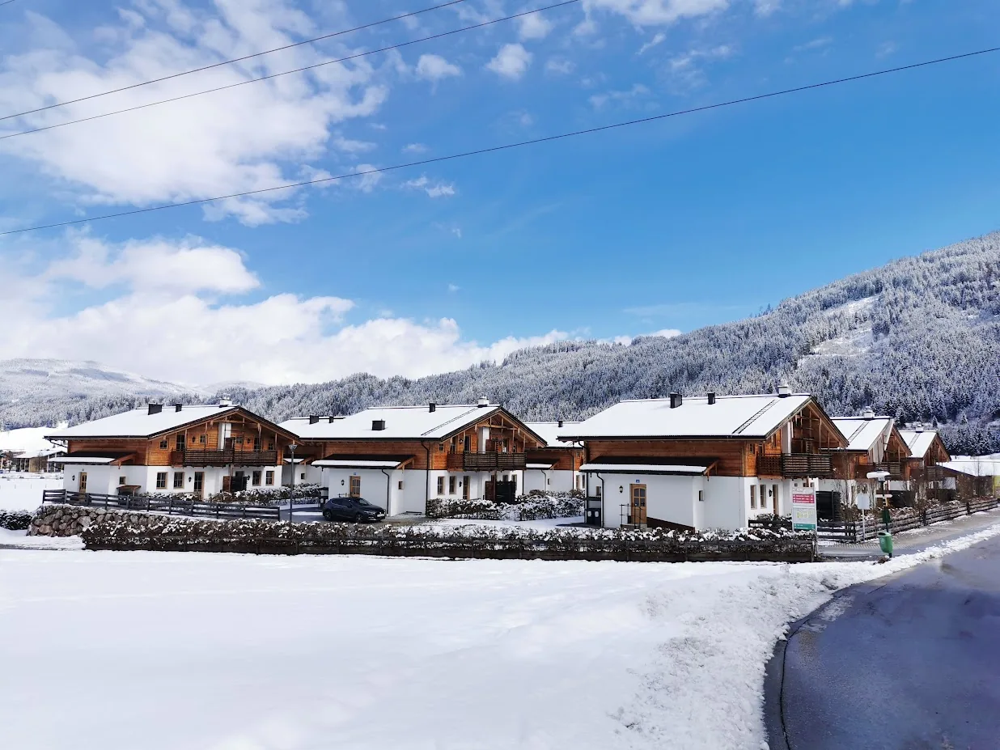

Winter in Flachau
Schneetage. Kaminabende
Ein gemütliches Chalet als Zuhause nach einem Tag im Schnee.

Winterurlaub
Kurze Wege und Wärme, wenn Sie zurückkommen
Der Lageplan zeigt den Fußweg zum 8er-Jet, die Langlaufloipe sowie die Wege zu Rezeption und Flachauer Gutshof. Im Chalet sorgen Sauna und Kamin für einen entspannten Abend.
Winteraufenthalte werden ausschließlich über Sunweb gebucht.